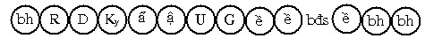
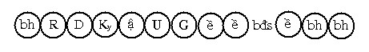
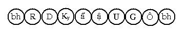
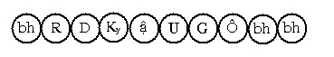

Bài 17 TÂM LỘ THIỀN CƠ VÀ LỘ HIỆN THÔNG I. Định nghĩa. Pādakajhāna là một thuật ngữ dùng để chỉ Ngũ thiền Sắc giới (pañcamajhāna), pāda nghĩa là nền tảng, ở đây có nghĩa là cơ bản. Đây là tâm lộ chuẩn bị cho những năng lực thần thông sắp xuất hiện theo ý muốn của hành giả. Lộ tâm hiện Thông (abhiññāvīthi) là tâm lộ diễn hoạt khi vị ấy thi triển những năng lực thần thông (iddhividha). Chữ abhiññā là hợp từ abhi + ngữ căn ñā, tiếp đầu ngữ abhi là cao tột, abhiññā là Thắng trí. II. Dẫn giải. Vị muốn hiện thông lực phải nhập vào tâm lộ thiền Cơ (pādakajhānavīthi), đây là tâm lộ làm nền tảng cho việc thực hiện thông lực, lộ tâm thiền Cơ bắt buộc phải có trước khi những năng lực phi thường hiện khởi. Lộ này cũng giống như lộ nhập Ngũ thiền Sắc giới, nhưng tiếp theo sau là lộ hiện năng lực thần thông chứ không phải là lộ phản khán Thiền. Diễn tiến của lộ tâm thiền Cơ như sau: Người độn căn:  Người lợi căn:  Tiếp theo lộ Thiền Cơ là lộ hiện Thông, diễn tiến như sau: Người độn căn:  Người lợi căn:  Ký hiệu: Ô: Thông lực (abhinññā). Lộ hiện Thông có được: - Sát-na: 6 sát-na tâm khách (hoặc 5 sát-na với người lợi căn) III. Lý giải. 1. Trước khi hiện thông. Vị Thiền giả muốn hóa hiện thông lực, trước hết phải nhập thiền Cơ, chú nguyện rằng: "Ngũ thiền Sắc giới mà tôi đã chứng đạt, hãy khởi lên nơi tôi". Rồi vị ấy chú niệm vào án xứ Kasina (không thể dùng án xứ khác để hiện thông). Quy trình diển hoạt của tâm lộ này như sau: Rúng động, Dứt lòng, Hướng ý môn, Chuẩn bị, Cận hành, Thuận thứ, Chuyển tánh rồi tâm Ngũ thiền Sắc giới sanh khởi liên tục suốt thời gian 1 sao hay 1 giây (vinādī – nādī) rồi trở về hữu phần cơ bản. Vị Thiền giả sau khi xuất Ngũ thiền sẽ chú nguyện điểu mình cần hóa thông, như độn thổ, đằng vân, hóa thân thành nhiều người khác hoặc biến ra dạng khác... Nói chung, muốn thực hiện cái gì thì chú nguyện điều đó. Tâm lộ diễn tiến trong lúc chú nguyện là lộ ý môn thông thường nhưng vào thời điểm này có tên là "Lộ chuẩn bị" (parikammavīthi). Diễn tiến như sau: Rúng động, Dứt dòng, Hướng ý môn, 7 sát-na đổng lực Dục giới có trí, rồi trở về hữu phần cơ bản, cứ như thế lộ chuẩn bị này tái hiện nhiều lần trong suốt thời gian chú nguyện. Sau khi chú nguyện xong, vị Thiền giả lại nhập thiền Cơ 1 lần nữa. Tức là lúc các tâm lộ chuẩn bị diệt đi, một tâm lộ thiền Cơ lại sanh lên, tâm lộ thiền cơ này có tên là "lộ thuận thứ" (anulomavīthi). Khi vừa xuất khỏi lộ thiền Cơ lần này, lộ hiện Thông khởi lên và những gì vị Thiền giả ước nguyện sẽ thành tựu. Diễn tiến tâm lộ hiện Thông (abhiññāvīthi) như sau: Rúng động, Dứt dòng, Hướng ý môn, Chuẩn bị, Cận hành, Thuận thứ, Chuyển tánh (bốn sát-na đổng lực này là xả thọ), một sát-na tâm Thông (abhiññācitta) khởi lên và chỉ một sát-na mà thôi, tâm trở về hữu phần cơ bản (người lợi căn không có sát-na Chuẩn bị) . 2. Các loại thần thông. Iddhividha (thần thông), theo nghĩa đen là sự thành tựu những năng lực đặc biệt. Trong Patisaṃbhidāmagga (Vô ngại giải đạo) có giải rộng về 10 loại thần thông là: a) Thành tựu thần thông do quyết định Tức là với 1 thân, vị ấy muốn hóa thành trăm, thành ngàn thân, vị ấy quyết định: "Ta hãy hóa thành nhiều thân", trí lực này nương vào Tư tâm sở (cetanācetasika), như trường hợp Ngài Cūlapanthaka. b) Thành tựu thần thông do biến hóa. Tức là từ bỏ thân bình thường để hóa thành một thân khác, do năng lực Định. Như trường hợp Đề bà đạt đa (Devadatta) hóa thân thành một thanh niên để mê hoặc Thái tử A Xà Thế (Ajātasattu). c) Thành tựu thần thông do trí đạo A La Hán. Như mọi phiền não được sát tuyệt trong tâm Tứ Đạo, đây là thành tựu của trí đạo A La Hán. Trường hợp Ngài Bakula bị cá nuốt không chết, hay Ngài Saṅkicca bị thiêu không chết khi còn trong thai bào người mẹ, đây là năng lực thần thông được thành tựu do trí Tứ Đạo sẽ sanh. d) Thành tựu thần thông do ý. Tức là tạo ra từ thân vị ấy 1 thân sắc khác y như vậy, do ý sanh. Như trường hợp Đức Phật hóa hiện vị Hóa Phật thay Ngài thuyết Abhidhamma tại cõi Tāvatiṃsa (Đạo lợi) trong khi Ngài đi khất thực tại Uttarakuru (Bắc Cưu Lô Châu) e) Thành tựu thần thông do Định tướng. Như thành tựu Sơ thiền do mục đích từ bỏ năm triền cái, đây là sự thành tựu do định tướng sẽ sanh. Trường hợp Ngài Sāriputta an trú trong định Diệt thọ tưởng, bị Dạ xoa Nanda đánh chùy vào đầu vẫn vô sự, đây là sự thành tựu do định tướng đang sanh. Trường hợp nàng Uttāra rải tâm từ (mettā) đến nàng Sirimā, khi nàng Sirimā tạt dầu nóng vào nàng, nàng vẫn vô sự. Hay như nàng Sāmāvatī làm quay ngược mũi tên của Vua Udena do năng lực Từ tâm, đây là sự thành tựu do định tướng đã sanh. f) Thành tựu thần thông do xả niệm. Tức là hành giả không ghê tởm đối với những vật đáng ghê tởm, do nhờ xả niệm được vững mạnh, như trường hợp Ngài Mahā Kassapa (Đại Cadiếp) dùng vật thực do một người cùi dâng, Ngài vẫn không thấy nhờm gớm loại thực vật ấy. g) Thành tựu thần thông do quả nghiệp. Như trường hợp chim bay giữa hư không thoải mái, hoặc một số loài Ngạ quỷ du hành giữa không trung, đây là năng lực thần thông do quả của nghiệp. h) Thành tựu thần thông do phước. Như Vua Chuyển Luân du hành khắp bốn Châu cùng với 4 binh chủng, hay Trưởng giả Jotika không bị cướp tài sản nếu như Ngài không muốn, hoặc như gia đình Trưởng giả Mendaka, đây là thần thông thành tựu do phước. i) Thành tựu thần thông do năng lực chú thuật (mantā), Như các Chú thuật gia phi hành giữa hư không. j) Thành tựu năng lực thần thông do tinh tấn. Như các môn nghệ thuật được thiện xảo do tinh cần rèn luyện. Thần thông trong tâm lộ hiện thông ám chỉ: 3 loại thành tựu là: Thành tựu do quyết định, do biến hóa và do ý. Trong phần tâm lộ hiện Thông này, đề cập đến 5 loại thông lực thế gian (loka iddhividha), tức là nói đến: Iddhividha (Thần thông) -ooOoo- Ðầu trang | Mục lục | 01 | 02 | 03 | 04 | 05 | 06 | 07 | 08 | 09 | 10 | 11 | 12 | 13 | 14 | 15 | 16 | 17 | 18 | 19 | 20 | 21 | 22 | 23 | 24 | 25 |